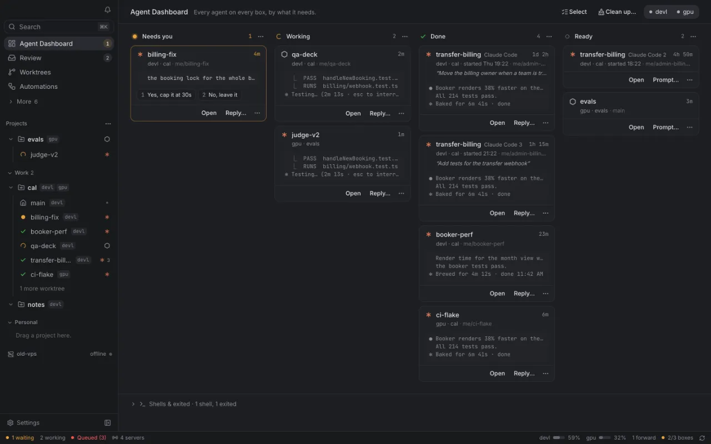
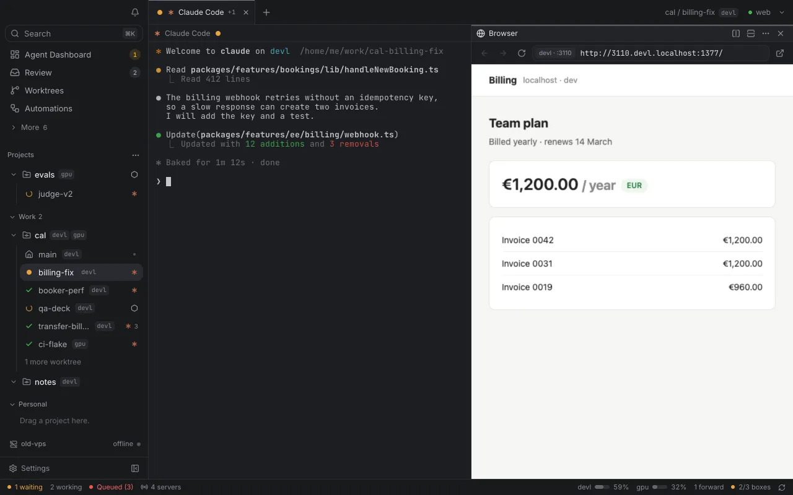
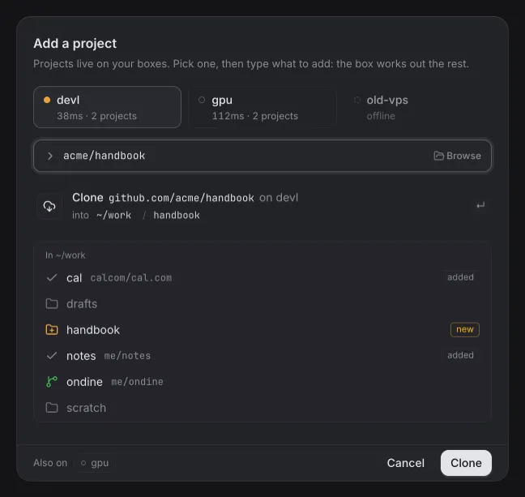
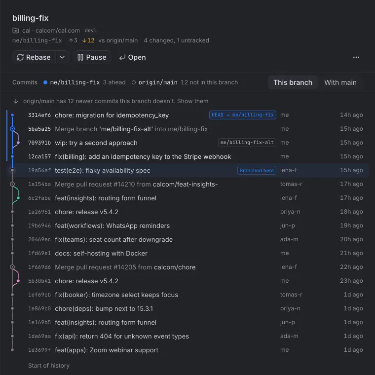
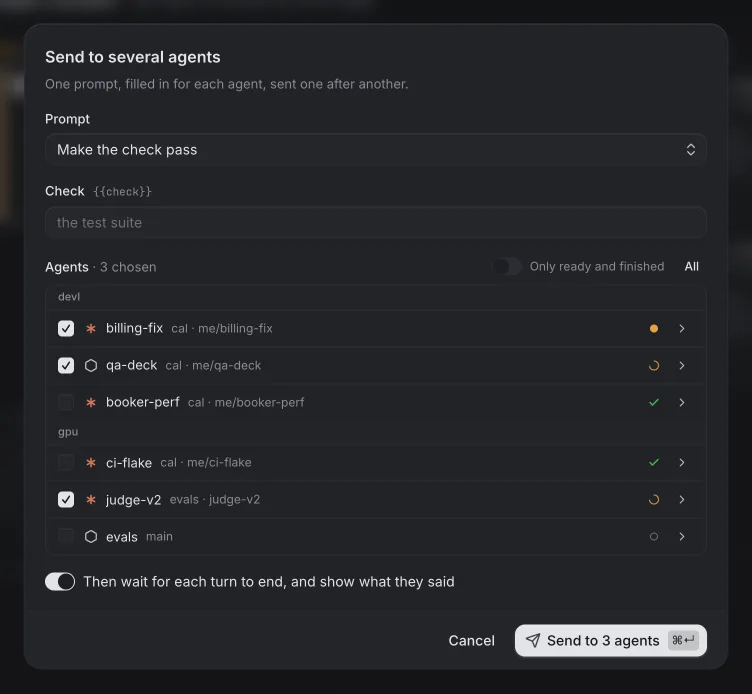

Berth runs Claude Code, Codex and other coding agents on your own dev boxes, and lets you work with them as if they were on your laptop. Close the app or sleep the laptop: the agents keep going.
Pre-release: build it from source, then add a box over SSH.

Screenshots are from Berth's demo mode, with invented boxes and repositories.
Every agent on every box, by what it needs.
The dashboard sorts agents into needs you, working, done and ready. Answer a question from its card, send a reply or open the session; finished work waits in a review inbox.
Why Berth
Built for machines you don't sit at.
The box serves; the laptop only connects. Nothing is public unless you share it, and nothing stops when you walk away.
Sessions that hold.
Agents run in Berth's own tmux server on the box. They keep going with nobody attached, through daemon upgrades, and while your laptop sleeps. Open the app in the morning and the work is done, or waiting for you.
Your laptopasleep
claude on devlworkingdone
22:0023:1002:1407:40
Pinned mutual TLS
Every install has an Ed25519 key. Both sides present certificates and accept only each other's pinned key, never a certificate authority, over your tailnet.
TLS 1.3 · Ed25519 · no CA
Private URLs, no DNS
Every port on a box has a URL on your laptop. No DNS zone, no hosts file, no dev server config, and nothing public.
3000.devl.localhost:1377
It upgrades itself
The new daemon goes over Berth's own connection. The box swaps it in and re-executes in place, so sessions are untouched. No SSH after the first time.
berth upgrade devl
How it works
A daemon on every box, one connection from your laptop.
berthd on each box owns the worktrees, sessions and automations. A small agent on your laptop keeps one connection to every box. The app is a view onto both, and holds nothing worth losing.
Your laptop
berth agent · CLI · desktop app
Keeps one connection to every box, and reconnects after sleep.
Serves private URLs, port forwards and laptop hooks.
The app and CLI talk to it locally: close the app any time.
TLS 1.3, mutualpinned keysHTTP/2, one per boxover your tailnet
devl a VPS · berthd
cal/billing-fixclaudeneeds you
cal/qa-deckcodexworking
cal/booker-perfclaudedone
gpu another tailnet · berthd
evals/judge-v2claudeworking
Each box: worktrees, tmux sessions, services, hooks, flows and kits, in one static binary.
The box serves, the laptop connects
Worktrees, sessions, automations and shares live on the box, so nothing a teammate needs runs only on a laptop.
Agent state from the agents
Claude Code, Codex and Cursor report through their own hooks, which forward identifiers and paths, never prompts.
Nothing public by default
Sharing a port is opt-in and confirmed in the app. The box runs the tunnel until you revoke it.
Features
Everything around the agent, on the box it runs on.
Worktrees, terminals, dev servers and automations live on the box, next to the agents that use them. Four parts you will touch every day, then the ones that are there when you need them.
Every day
01 Workspaces
A workspace for every worktree.
A worktree's terminals, splits and browser tabs open together. Closing a tab only detaches: the session keeps running on the box, and each dev server is a tab away at a private URL.

02 Projects
Add a project on any box.
Pick a box, then type one thing: a path, a git URL, owner/repo, a pull request or a new name. Berth says exactly what Enter will do before it does it.
“Also on” sets the same repository up on your other boxes, with its kit.
One repository on several boxes is one project in the sidebar.

03 Worktrees
Every worktree on every box, with its history.
One table shows how far each worktree is ahead and behind, its uncommitted changes, its agents and its port. Open one for its commit graph against main, and rebase or pause it from there.
Start one from a branch, a pull request, an issue or a link.
Worktrees made by other tools, plain git worktree add included, show up too.

04 Orchestration
Agents that drive agents.
Prompt a running agent, wait for its turn to end, run a check where it works, and loop until the check passes: from the app, the CLI, a hook or another agent.
Send one prompt to several agents across boxes, and wait for each turn.
Berth's skills teach Claude Code and Codex the same commands.

When you need it
All of it runs on the box, so it keeps going with your laptop shut.
Away
Prompts wait for the box.
A prompt for a box that can't be reached waits on your laptop, and is typed in when the box is back, after the agent's current turn. At most once.
berth session send … --queue
Automations
Flows that run on the box.
When an agent finishes or needs you, a worktree is made, a schedule fires or a pull request gets a review: run commands, prompts, new agents or webhooks. before: hooks can refuse any action.
Kits
The same setup on every box.
A kit carries setup scripts, environment, ports, services, hooks and flows, and travels as a link. You see everything it does before anything runs.
Environment
Secrets by reference.
A value can name a 1Password secret. The box reads it when something starts and keeps it in memory, never on disk, in a log or in an event.
op://vault/item/field
Notifications
Told when it matters.
Waiting agents, failures and finished work go to one place. Each box also serves a small phone app over your tailnet, to answer agents with the laptop shut.
Plugins
Extend it with plugins.
A plugin is an ES module that adds screens, panels, commands and themes. The built-ins, from git changes to the box monitor, use the same API as yours.
definePlugin((berth) => …)
Open source
Developed in the open, in one repository.
The daemon and CLI in Go, the desktop app in Tauri and React, the built‑in plugins and the plugin SDK all live in one repository on GitHub. Read how it fits together, or build it yourself.
The daemon on each box: worktrees, sessions, services, hooks, flows, kits.
cmd/berth
The laptop CLI and background agent: connections, private URLs, the app's API.
app/
The desktop app, in Tauri, React and coss ui.
plugins/
The built-in plugins, written against packages/plugin-sdk.
kits/
Kits, such as cal-com.
docs/
Guides and the security model, beside the code.
Get started
From source to your first agent.
There's no release yet, so you build Berth on your laptop and it installs itself on your box over SSH. You need Go 1.27, and Node 22, pnpm and Rust for the app. The box needs Tailscale, or --listen in step 2.
1
On your laptop, build berth
git clone https://github.com/sean-brydon/berthd
cd berthd && make all
bin/ gets berth for this laptop and berthd for Linux boxes, amd64 and arm64.
2
Add a box over SSH
bin/berth add ssh me@my-box --name my-box
One SSH session: it uploads berthd to ~/.local/bin on the box, starts it as your user's service, installs the hooks that report needs you, working and done for the agent CLIs it finds there, and pairs. No root. Without Tailscale on the box, add --listen 0.0.0.0:7444.
3
Open the app, add a project and start an agent
cd app && pnpm install && pnpm tauri dev
The app talks to the laptop agent and offers to start it, at login too if you like. In the app, Add a project clones a repository onto the box, or picks one already there; then start Claude Code in a new worktree.
Or from the terminal, for a repository already on the box
bin/berth location add my-box/app ~/work/app
bin/berth task new my-box/app/fix-login \
--agent claude --prompt "Fix the login redirect"
Not yetOnce the first release is out
curl -fsSL https://berthd.app/install | sh
One line on the box will install berthd for your user and print a link to paste into Add a box. Until then it says there's no release yet, and prints the steps above. Releases
Follow along.
Watch the repository for the first release, or open an issue with what you'd run on your boxes.